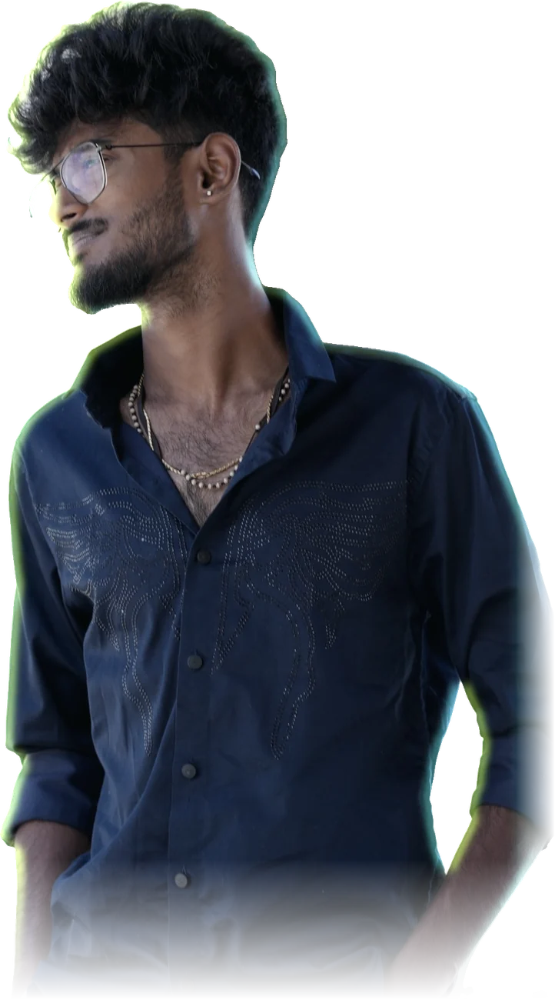

AI documentary · Direction & edit↗
Roots
of legacy.Cover image to be added
Venthondiyar Clan Heritage Documentary
An AI-assisted historical documentary based on a family’s 250+ years of history.
Creator × Manager — Chennai, India
“I Create the Vision. I Lead the Execution.”
Transforming ideas into visual experiences through creative storytelling, AI-powered production and strategic project leadership.
01 / Selected works
Five bodies of work across documentary, commercial production, AI filmmaking and community storytelling. Open any project for the full case study.
An AI-assisted historical documentary based on a family’s 250+ years of history.
Advertisements and product videos for agency clients, including Zubi Candy.
Cinematic visuals and video experiments built with generative AI.
Event branding, posters and promotional videos for church and youth communities.
Experimental design, motion graphics and personal creative explorations.

Jagan A. — Chennai02 / About me
I conceptualise ideas, produce them and lead the people who deliver them. Creative work that ships on time and lands with its audience.
My foundation is storytelling. I studied English, which taught me how a story is structured before I ever shaped one on a timeline. In 2024 I joined Brandstep Digital Marketing Agency as a fresher video editor. Since then my work has grown from editing my own cuts to leading the editing team, handling HR and managing projects from brief to delivery.
Alongside that, I work with AI filmmaking and generative tools to build visuals that would otherwise need a full production crew, while keeping the craft, the continuity and the story in human hands.
Visual storytelling, video editing, motion design, advertising and creative direction.
Team management, HR operations, project coordination, workflows and client communication.
AI filmmaking, generative AI, creative technology and modern production workflows.
I am a creator who understands execution, a manager who understands creativity, and an innovator who uses technology to turn ideas into experiences.
03 / Creative capabilities
Production craft, emerging technology and the management discipline that holds them together.
Tools — Premiere Pro · After Effects · DaVinci Resolve · Google Flow · Gemini · Higgsfield · Claude
04 / Leadership & experience
At Brandstep I manage the work around the work: people, process, clients and deadlines.
Distributing editing and creative work according to each person’s strengths and current load.
Setting how work moves from raw footage to final export, and keeping standards consistent across editors.
Taking briefs, sharing drafts, collecting feedback and managing revisions.
Tracking every project’s status so problems surface early.
Planning around deadlines and keeping the team on schedule.
Supporting people operations and day-to-day administrative responsibilities.
Building trackers, checklists and systems that make the team faster and clearer.
05 / My journey
From a fresher video editor to a professional handling creative leadership, HR and project management.
2023 · Foundation
B.A. English — Don Bosco College of Arts and Science, Chennai
Studying literature taught me structure, voice and what makes an audience feel something. It became the base of everything I edit.
2024 · The first cut
Brandstep Digital Marketing Agency / BrandstepCorp
Joined the agency as a fresher on the edit timeline: ads, reels and brand videos for real clients on real deadlines.
Growing the role
Video Editor Head
Moved from my own cuts to the whole team’s: workflows, task assignment, reviews and the quality bar every video has to meet.
Beyond creative
HR · Project Manager
Took on HR and project management: coordinating clients, tracking progress, protecting timelines and improving internal processes.
Education
Loyola College / Pondicherry University — completed
Formal grounding in human resource management to support the people side of my work.
2024 – Present · Now
Brandstep Digital Marketing Agency
06 / Contact
Have a film, a campaign or a project that needs both creative direction and someone to run it? Message me. I usually reply the same day.